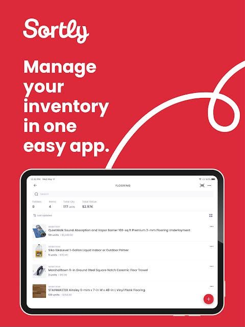
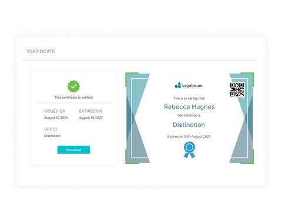
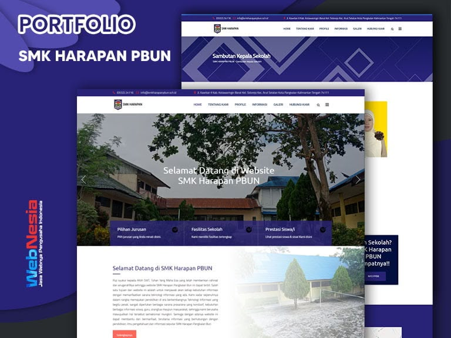
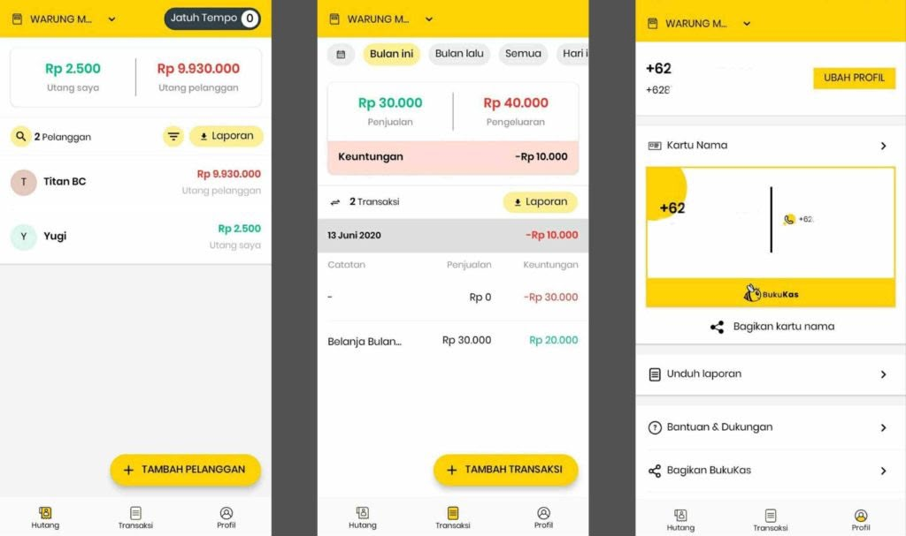

Saya adalah mahasiswa jurusan Sistem Informasi Akuntansi yang memiliki ketertarikan mendalam pada dunia pemrograman dan pengembangan perangkat lunak. Sejak awal kuliah, saya mulai mempelajari berbagai bahasa pemrograman dan kerangka kerja untuk membangun aplikasi yang dapat memudahkan pekerjaan orang lain.
Saat ini saya fokus pada pengembangan web menggunakan PHP dan CodeIgniter 4, serta pengembangan aplikasi mobile dengan Flutter. Saya selalu terbuka untuk belajar hal baru dan siap bekerja sama dalam tim maupun mengerjakan proyek secara mandiri.
Kami adalah tim kecil yang memiliki semangat besar dalam mengerjakan setiap tugas dan proyek. Meskipun jumlah anggota tidak banyak, kami selalu berusaha saling melengkapi, berbagi ide, dan mendukung satu sama lain agar semua pekerjaan berjalan lancar. Setiap tantangan yang datang selalu kami hadapi bersama, sehingga terasa lebih ringan untuk diselesaikan.
Bekerja dalam tim ini terasa menyenangkan karena suasana yang akrab dan penuh kebersamaan. Kami tidak hanya serius saat mengerjakan tugas, tapi juga sering berbagi tawa dan pengalaman selama proses berlangsung. Hasil yang kami dapatkan mungkin sederhana, tapi kami bangga karena dikerjakan dengan usaha bersama dan rasa kebersamaan yang tulus.

Sistem pengelolaan stok barang berbasis web yang memudahkan pencatatan masuk dan keluar barang. Dibangun dengan CodeIgniter 4 dan MySQL.
Lihat Detail
Aplikasi pembuatan dan pengunduhan sertifikat secara otomatis dengan format PDF. Menggunakan fitur template dinamis.
Lihat Detail
Website informasi sekolah yang responsif dan mudah diakses melalui perangkat apa pun. Dibangun dengan HTML, CSS, dan JavaScript.
Lihat Detail
Aplikasi mobile sederhana untuk mencatat pemasukan dan pengeluaran harian. Dikembangkan menggunakan framework Flutter.
Lihat Detailrozaanita5@gmail.com
+62 838-4925-3464
rozaanita2_
rozaanita31_
Padang, Sumatera Barat